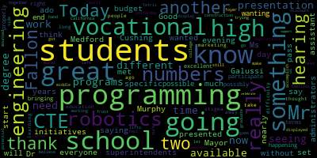
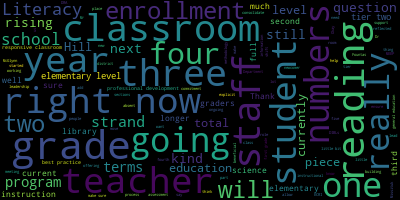
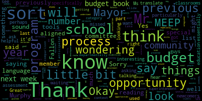
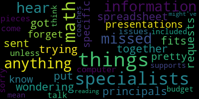

[Lungo-Koehn]: That'd be great.
[Graham]: Yep, I can do that.
[Lungo-Koehn]: Thank you. That'd be great.
[Unidentified]: Yep, I can do that. All right, we're good on YouTube.
[Lungo-Koehn]: We have a school committee meeting posting date was May 6 2022 meeting date is May 10 2022 special school committee meeting for the fiscal 23 budget 7pm and by zoom. You can also call in by dialing 1-669-900-6833. Please enter meeting ID when prompted 918-0556-0779. The meeting can be viewed through YouTube as well as Method Community Media on Comcast channel 15 and Verizon channel Additionally, questions or comments can be submitted during the meeting by emailing medfordsc at medford.k12.ma.us. Those submitting must include the following information, your first and last name, your Medford street address, your question or comment. The agenda will be as follows, presentation regarding the fiscal year 23 Medford school committee, schools operating budget focusing on strategic priorities concerning equitable sports for high needs, most vulnerable students, instructional technology, COVID-19 recovery and organizational structure. Member Mastone, will you please call the roll?
[Mustone]: Yes, I even wrote it down so I wouldn't forget anybody. Member Graham. Here. Member Hays. Okay. Member Kreatz. Here. Member McLaughlin. Here. Member Mustone. Here. Member Ruseau. Here. And Mayor Lungo-Koehn. Present. Five present, two absent. No, just one's absent. Just Sharon.
[Lungo-Koehn]: Just Sharon. Okay. Six present, one absent. Thank you. We have a quorum. We can proceed. I'll turn it over to the administration, whoever's going to start us off.
[Edouard-Vincent]: Good evening, everyone. Today, we're going to start off our day two for budget, and we have another set of presentations today. We'll be hearing from our assistant superintendents on specific initiatives, Ms. Galussi and Dr. Cushing. We'll also be hearing from our vocational school and some of our other administrators. And so without much further ado, I'm going to pass it on to Mr. Murphy.
[Murphy]: Thank you, Dr. Edouard-Vincent. Everyone can hear me okay? Great, thank you. So as the superintendent said, tonight, we will be diving back into our developing FY23 budget. I'm going to go through the sort of background of sort of school budgeting 101 pieces a little more quickly tonight. Although, as I said last night, and you've heard me say throughout each of your budget updates that that those contextual pieces are important, particularly for community members. As has been pointed out on several occasions, this process is an opportunity for the members of the greater Medford community to have an opportunity to see how it is that the district is investing taxpayer dollars and what strategic priorities we are pursuing on behalf of the students of the Medford public schools. The structure that the school committee adopted this year with regard to the budget process is meant to be more efficient, but part of that is also getting us to a place in which we can have a thoughtful discussion and expand upon the rationale and thought process behind many of the priorities that are before you. When we get to a few of the slides from last night, Um, there'll be a few pieces, uh, that Dr. Edward just alluded to one of them that, um, we sort of moved past, uh, quickly last night. Uh, but we'll have the opportunity to hear a little bit more about. Uh, this evening, and then we have some operational, uh, issues that we'll discuss just in terms of sequence, in terms of where this is leading. Um, we'll have a comprehensive budget update at your, uh, may 16th meeting. Um, and as we'll talk about when we get to the timeline, What we're driving toward is a budgetary request to the municipal government. That'll be followed by deliberations on the municipal side, presentation presumably of the school administration at that time before the municipal council, which is an annual event that gives us the opportunity to discuss with that body the priorities that have made it into the superintendents request. The mayor will make a recommendation to the municipal council and then subsequent to the council's appropriation of that financial, those funds for FY23, the school committee will be asked to take a vote to adopt that budget. You'll remember last year that just based on the calendar and how that process played out, the school committee, once we knew the mayor's recommendation to the council, took a vote that preceded the council's appropriation that was contingent upon that number coming back and that's what leads to the administration's implementation. So that's the quick overview for community members who might be joining us this evening and who haven't been along for the ride throughout the various budget updates. We encourage you to watch the May 9th meeting in which there was a more extended version of that explanation. And if mayor, you and members of the committee are ready to proceed, I asked Dr. Cushing to put up the deck. Again, the first half of this is very similar to what we saw last night. That's our budget process, that's our timeline, makes note of the various governmental components that we're contingent upon. Our budget is made up of external funds that come from the federal government and our Chapter 70 allocation that comes from the state government, that's taxpayer dollars from all cities and towns across the Commonwealth that in Medford makes up about 20% of our operating budget. We are largely a local contribution community, meaning it is the taxes of the people of the city of Medford that pay for approximately 80% of our budget. A really important point, a slide that we can't just pass by quickly, even though I know you've now seen it on three occasions in the last nine days, but when you have a 67 to $70 million operating budget and 54 to $55 million are spent on personnel, and you have nine open collective bargaining agreements, we know that that is a major driver of our budget process. And so given that variable that we are negotiating or will soon be negotiating contracts with nine of 10 bargaining units representing the majority of our employees, we know that that's something that we're gonna have to take into account as we move toward the FY23 budget. It is true for all school systems, organizations that are made up entirely of people, focused on people. People are where the money goes. And so you see there our third bullet point that you've heard me speak to in the past, which is that while we as an organization don't articulate with specificity our proposals while we're at the bargaining table as a general rule, We're very clear and we have been throughout previous budget processes and very clear throughout this fiscal year that we understand that there's a critical importance with respect to maintaining competitiveness with regard to our wage increases. And it is just as important that we adhere to our responsibility to maintain sustainability. Those are the two prongs of everything we do at the bargaining table. And it has a significant connection to what we're doing here in terms of planning out our operating budget for FY23. And so that frankly, it does have an impact and it influences everything else that we'll speak about tonight that we'll be articulating as we did last night, the budgetary priorities and the ones that we feel have risen to a level of urgency with which we need to pursue and make strategic decisions as to whether to utilize recurring or one-time funding sources. But with respect to understanding that one of the biggest variables is still to be determined as we continue to negotiate in good faith with our bargaining partners, that is the sort of context in which the FY23 budget is developing. So we said that Competitiveness and sustainability is a critical priority for us with regard to our collective bargaining. Before you now are the priorities that are informing the development of our FY23 budget. Each of these has a nexus in one way or another to the goals stated in the strategic plan that the school committee adopted upon the superintendent's recommendation earlier this year. So as each of the priorities that we articulated last night and the ones that we'll talk about tonight, will connect in one way or another to those goals. And so, again, you've heard us speak about them, and hopefully you're able to sort of see now the sort of concrete connections and how the aspirational statements of the strategic plan are translating into concrete budgetary objectives going into the new fiscal year.
[Unidentified]: That's the remaining priorities.
[Murphy]: Again, these are the big picture groupings. So with every budget, we start with our fixed costs. These are the things that based on decisions that have been made previously, contracts that have been adopted, curriculum that we've invested in, and then always some special education costs that we don't, we will see some relief from based on some of the external funding, but not until later during the fiscal year, we have a responsibility to report on what is the estimated fixed costs. In tonight's budget presentation, Primarily, we're going to focus on some of the larger organizational goals in our structure, as well as some pieces of technology, although we ended up sort of diving into the technology last night, which hopefully will allow for a more efficient use of time this evening. This set of data essentially reports out on how the budget is going to move, irrespective of any strategic decisions that the school committee makes, and regardless of what happens at the bargaining table. This is the funding that, in one way or another, we've essentially already committed to, the organization has committed to. And you can see that the biggest number there, with regard to the contractual salary increases, those are largely steps and lanes that are owed under existing CBAs. All of these are estimations, and pretty much every number that you'll see here is an estimation. As was the case last year, as we continue to scrub these numbers, there could be some fluctuation. You'll see the $155,000 estimate there for the subscriptions and contract service renewals. We did an analysis today that indicated that based on some of the ongoing negotiations with some of those vendors, it is possible that that could come in a little under 155, which would be good. It could nudge that fixed cost increase down. Um, but that's, that's still uncertain. And so, um, And frankly, even with that analysis, it did not appear as though it was going to be of a magnitude that sort of justified going back at this moment and changing that. But prior to the school committee, taking a vote on a precise number, um, all of that will be tied to various line items and you'll have a, you'll have a more, um, more precise sense, but you can, at the moment it would appear as though it will still be in the vicinity of 150, but that line will be. the vicinity of $155,000, but a little later tonight, I'll sort of expand upon that and give you a sense on a very broad level and a high level, just how much of the district's financial commitments through various programs, platforms, applications, and use of various infrastructure are tied to that number of $155,000 being the increase of FY22 over FY23.
[Unidentified]: We'll move forward to a slide that we talked a little bit about last night. Dr. Cushing, if you want to just move up there, thank you very much.
[Murphy]: So again, this spells out some of the numbers that we count on each year to get a sense as to, or at least in recent years, we do. It's not the case that we've been looking at ESSER funding for too long, but it's been such a lifeline coming out of the pandemic that managing our ESSER budget has sort of in some ways become as sort of second nature in many ways as our Chapter 70, our local contribution. But on the screen now represents, as we discussed last night, the minimum amount of funding that under state law, the Medford community is obligated to commit to the public school system. That's $64.9 million. That represents a $3.8 million increase based on the minimum from FY22. That is a significant increase. However, as we've said, that increase still brings us below what our current operating budget is, which is a testament to the commitment to education of the people of Medford. But it also indicates, frankly, that the minimum that the state has established for us is not really in keeping with reality, frankly. And so, you know, to sort of weaken the table for the time being, Um, uh, are any agreements or disagreements we might have with the state's funding formula, uh, and the implications of some of the, some of the provisions of those laws. But, um, the sort of short version of this as well, we're seeing a significant increase in the minimum requirement. It's a little bit of a moot point based on the existing commitment that the community has made. Um, and then the number in the table in the bottom, right, that's $69.9 million. That represents our estimated projected FY23 budget, including only fixed costs. So if we only included the $2.5 million in contractual obligations that currently exist, that's where that would be.
[Unidentified]: We can go to the next slide.
[Murphy]: And so we're getting now into some, there are new slides just for anyone who's wondering if we're just doing the same presentation for last night. I promise you we're not. just sort of establishing that baseline information and context we thought would be important coming into tonight's presentation. But as you move left to right on this table, you can see that 69.9 includes the fixed cost increase that we're currently estimating. The $71 million number at the center of this table represents the number, if we were to incorporate into the FY23 budget, a 2% cost of living increase for all bargaining unit employees. That is an extension of the point I made earlier tonight that we recognize our responsibility to maintain competitiveness with respect to wages. We also have a responsibility to maintain sustainability so that we're not establishing financial structural deficits that will in turn result in us not having the services available to students that they need in the future. And so that is something that That's an obligation that we have. It's a dual responsibility and one that we take with us both through the budget process and in the course of collective bargaining. On the far right, and again, you see the highlights there just to expand upon a few points from last night, the sort of strategic conundrum that school districts find themselves in in this budget season has to do with wanting to avoid the development of those types of structural deficits, we don't want to commit a significant amount of one-time funding to personnel needs that we know are going to last beyond the time and the nature of that funding. And at the same time, as was the case last year, we recognize that it is personnel that our students require to bridge the gaps that have been caused or exacerbated by the pandemic. And so while as a general rule, we have and we would continue to want to avoid committing one-time funding to personnel needs, there are places in which that is unavoidable and it's advantageous for the students of the Medford Public Schools for us to do just that. And that was part of our recommendations last year and it will be part of our recommendations this year. The other point I would just add in terms of that distinction, that there are instances in which both on the city side with the ARPA funding and on the school side with the ESSER funding, that it's not just a question of the sort of strategic problems that come with committing one-time funding to personnel costs. Each of those grants, each of those federal funding sources have eligibility criteria. And so it is not the case that we can just commit some that neither the school district nor the city can commit portions of that funding to certain personnel objectives, even if we would want to. So I'm going to pause for a second because we're about to get into some of the pieces of the conversation that are sort of a jumping off point from where we'll be talking tonight. And so the next slide is not one that you've seen as part of the budget process, but one that you'll be familiar with from previous presentations to the school committee. This is our organizational chart. It's a complicated organization. It's a complicated organizational chart, but this essentially spells out the various areas of responsibility and portfolios that various administrators are responsible for. And so as a general rule, this organizational chart, you should be able to see in this which office is responsible for advancing various components of the strategic plan. in which areas, as well as offices that are responsible for the management and oversight of some of the budgetary lines that we'll discuss tonight, as well as next week. So this is how we are currently organized. There are shifts from time to time as the superintendent sees fit, but as a general rule, this is how we're organized to do the work of the strategic plan and to act as fiscal, responsible fiscal stewards of the people of Medford's dollars. And then as we move forward, we'll be talking a little bit more about that. Again, so last night we talked about our categorization of A through F. Just like some of these priorities will shift as we continue to vet internally, take feedback from the school committee, some of the labeling of certain categories could shift and likely will prior to the superintendent's recommendation to the committee. You will not see changes in the categorization of priorities this evening. There are one or two that just in the course of our conversation last night, one I think I even referenced in the midst of the presentation, There are likely to be a few shifts with respect to that. But if we go to the next slide, you'll be able to see, and for anyone joining us tonight for the first time, each of the budgetary priorities that the school committee is being asked to consider is essentially labeled as one of these six categories. And it is not the case that it is a strict hierarchy of we'll do everything in box A, and then if we can, then we'll do everything in box B. And if we can do both of those boxes, we'll do box C. That's not what this represents, nor does the list of potential priorities and objectives that you'll see in the succeeding slides. Does that indicate that that is somehow some type of extremely long wishlist that the district will be pursuing? It is an organization of, based on the data that we have and the feedback we've received from staff of budgetary priorities that deserves some can generally speak in some consideration. There really isn't, if there are priorities that would occur to everyone from the superintendent to the various administrators that we've discussed that as we discuss it as a leadership team might not necessarily make the cut basically for lack of a better term before we get to the school, before it gets to the school committee consideration. But there's nothing on this list that we think is necessarily not in a certain context, something that we'd want to pursue. But context is important. And some of the contextual pieces that we have to think about is the fact that, one, we have a limited budgetary capacity, as all public organizations do. Two, the city has a limited budgetary capacity, as all public institutions do. And we have this unique situation in which we have this significant amount of grant funding that's available to us that is time limited. And therefore, we want to be mindful about structural deficits. And at the same time, if we have $6.2 million available to us over the next three fiscal years, which we do through the ESSER funding, we want to put that toward investments that are going to support students and their needs right now so that we can position them for success throughout the remainder of their academic careers. One of the things that you heard the administration speak about a great deal in the last budgetary cycle, and it is just as true now, and in some ways perhaps maybe more pronounced, is that we do not want the students who went to the Medford Public Schools during the COVID-19 pandemic to have their academic careers defined by the disruption caused by the COVID-19 pandemic. And so essentially all of the budgetary priorities that you are seeing are informed through that lens of understanding that there are learners who have had these learning gaps that have been caused or exacerbated by the pandemic. And because of that, and again, you heard me talk about the eligibility criteria for the ESSER funding. One of the sort of short way to summarize the multi-page definition that has been promulgated by the federal government and DESE with respect to eligibility and expenses is to the sufficiency of the nexus between the what you're trying to fund and the correlation with the disruption caused by the pandemic. So if it's something that we would have done and would have done before and would have done after and would have done regardless if any of us had ever heard of COVID-19, it's more likely to be an operating budget priority. If it is something that its necessity has been increased as a result of the pandemic, and particularly if there's some correlation between the priority and the timeline associated with the pandemic in the succeeding years, then it is something that would be more likely to be considered on the ESSER budget. But there are other things that you'll see, and we talked about last night, that we're saying we have to do this one way or another. And if we don't, if we can't do it on the operating budget, then we would need to resort to the ESSER funding. Again, we will probably tinker with the categorization between now and next week, but as a general rule, that's sort of how we're analyzing the various funding priorities. Okay, so as we go through the next few slides, assuming everyone is still awake because I recognize for some reason my voice is more monotone than usual this evening, we're going to be expanding upon a few points that for various reasons, we didn't necessarily spend a lot of time on last evening. Again, our primary goal tonight is talking a little bit about how these priorities relate to our structure as an organization and our strategic priorities under the strategic plan. So we'll be talking a little bit about the priorities that are highlighted and they could, again, as you can see, some of the things that we didn't spend as much or any time talking about last night, we wanna make sure they're given given their due, whatever that may be. And then Ms. Colusa will be talking a little bit about both the professional learning opportunities at the elementary level, as well as one of the bullet points, I guess that's a little further on in the presentation, is about the ongoing responsibility to be trying to identify potential efficiencies and savings. And we look for those before, during, and after the budget process. And there are times when we think we have a potential savings that we're going to realize, but we don't know. And sometimes we don't know till later in the year. If there was a way that we could sort of establish in a very rigid way, this is exactly what every line item is gonna be, that would frankly make it a lot easier to administer the organization, but that's not really how it works. Um, so what we're doing is trying to project where there could be some flexibility, um, and then, and make decisions accordingly. So, um, I know we've spoken about the math coaches previously with regard to the investigations three. Um, as you can see, that's listed as a first priority in part, as we talked about last week, excuse me, last night, I guess, and last week, maybe, um, that we're making the commitment to the new elementary school math curriculum. This is categorized as category A for the reason that I mentioned earlier, that it's something that we would be prepared to do irrespective of the pandemic. And so it's one of very few personnel priorities that we intend to, that really we believe should be in the operating budget and not run the risk of the one-time funding piece. We've highlighted it here because in case there were any other questions about that or sort of the strategic thought behind wanting to make sure that we have the personnel to match that investment. I think I offered this last night and then we started moving through the priorities and just, I didn't know that it got as much time as it otherwise would have. I just wanted to stop here for a second to see if anyone has any questions for Ms. Kalusi or anyone else as to the rationale or reasoning behind this. And if no one does, I can't see, Squares Mayor, I don't know if you're able to, but if we want to just keep moving, I'm happy to do that as well.
[Unidentified]: Everyone would like me to keep moving? Great.
[Murphy]: All right. On we go then. So I highlighted the registrar because it was one of the few personnel items that we didn't have the opportunity to spend time on. This is a position that has in one form or another has existed previously in the Medford Public Schools. it would exist in most districts of our size. And it is something that we think would add significant value in terms of the capacity would potentially open up with respect to other administrators. It's also something that's been categorized, we think appropriately as a category D, because it's not one that is going to be able to, as most of the personnel priorities, As most of, Dr. Cushing, if you just want to text that, I think we might have a technical issue that we need to address with one of the committee members, but it is prioritizing category D in part because it's not a student facing position. And so while we think in terms of making sure that we're maximizing use of all staff and administrators time, it is something that is absolutely worthy of consideration and could position us to more have a higher functioning secondary system in particular. It's also frankly an example of something that may not make a final recommendation or a final adoption based on the fact that the priority has to be student facing positions that will position students to not have their academic careers defined by the pandemic. So there frankly isn't a whole lot to discuss with that at the moment. It was just one that we didn't spend any time on. and also didn't wanna leave there to be any confusion that the district would be prioritizing the registrar over and above some of the other positions that have that distinction of being a more student-facing position. So any questions on registrar or any other points that anyone would like to make?
[Unidentified]: Mayor? Member Graham?
[Graham]: Yeah, on the registrar, if I am recalling correctly, this is a position that was eliminated when we made a serious cut to the budget for school year 2021 and has not yet been restored. Is that correct?
[Murphy]: That timeline sounds right to me. It did precede my time. I don't know if the incumbent was in the position at the time it was eliminated, But I believe it was in that group of positions and for the reasons that you're stating, yes.
[Graham]: OK, thank you.
[Murphy]: OK, if there are no other questions, then I think we could probably move on. So this next one, there was a typo with respect to the number represented in the previous slide. So one reason to highlight this, the conversion of the library positions was because we had the number wrong, which I apologize for yesterday. But the other reason is that we didn't have the opportunity to expand upon it. But this is another issue that's circulated around the organization for some time. My understanding from Ms. Sladen is that the last time the district employed a librarian in each school was in 2008. The work of a school librarian has changed since 2008, but we still think that there's value there And the question that we've been deliberating through the budget process is, well, there's a consensus that this would be a good thing for our schools. And I'd ask either Dr. Cushing or Ms. Gluski, you wanna expand upon that. We also know that without a change to the structure and the programming that we're offering through our library media centers, merely changing the position from a non-certified position to a certified position, the implications of that are somewhat diminished. And so it is something that it was something that in a school committee member survey was a very common response as to something that the members of the committee feel strongly about. Again, I think there is a consensus there. I think that's a priority that's shared between the committee and the administration. It's probably the case that this is a question of if, excuse me, of when, but not if, that as an organization, we want to move toward having the certified librarians so that we can establish that high quality programming and the type of library literacy that can come with that type of commitment. And the question that we're looking at now is looking at the broader budgetary context, would this be the correct fiscal year? to make that change. So Ms. Galussi or Dr. Cushing, would either of you like to expand upon that? Or I don't believe Ms. Layden, who was with us last night, had a scheduling conflict. So I don't think that she's on the call tonight. But if either of you would like to comment, I'd be happy to take a breath.
[Galusi]: I think the only thing that I would add is just at the elementary level right now it's a little scattered in terms of like library rotation so kindergarten through second grade really tends to go to the library weekly. But the offerings and when they're at the library it's kind of primarily. with the sole purpose of like signing out books. By adding this piece and full librarians, it would allow at the elementary level for a more instructional component in terms of library and media. It would also bring in on a more consistent basis for grades three through five. The logistics of like this, the planning and scheduling are the things that would have to be worked out just to ensure the balance of like time and learning, but it would add an instructional lift to the library offering that's currently in place right now.
[Peter Cushing]: And just to follow up to make sure that each school has a librarian, it allows for the library media center to become a place of discourse and dialogue. It allows for them to really plan cohesive lessons to support students as they research. And as libraries now tend to also include a maker space, something that right now I believe only our high school library does. And just want to make sure, as I don't, I'm not 100% familiar with all of our elementary libraries, but I do know that our high school library is the only one with a maker space for our secondary schools. It becomes an opportunity to really engage students across more than just checking out books, as Ms. Scalusi mentioned. And really want people to really think about that debate and discourse, that dialogue and discourse that can happen in a well-run media center.
[Murphy]: Thank you, Dr. Cushing. Thank you, Ms. Pelosi.
[Graham]: Member Graham, did you have your hand up still? I did. I just wanted to ask the administration to consider how we could move from a really non-functional and untenable situation at the elementary level library to something that demonstrates progress. a 0.6 FTE spread across four buildings. Like she could be superwoman and there would be next to nothing that she could reasonably accomplish. So, and I've watched this as a volunteer myself since long before I was on the school committee, there's a whole host of like missed opportunity in terms of educational opportunity for kids that would obviously need dedicated support, you know, dedicated individuals at like a 1.0 level in terms of like when you look at library best practice, but I also want us to think about the fact that the current structure is totally unsustainable. So progress, even if it's not all of this, could be meaningful and I also share the concerns and commentary around needing a curriculum and an approach for staff when we get there. It cannot be homegrown, it cannot be pieced together by strapped resources inside the district. There is content out there Um, and I think we, if we're going to invest, we need to think about a curriculum that. Um, supports the investment as well at some point in time.
[Murphy]: Thank you, Mr. Um, so again, I think this is something that, um, we have, uh, the administration has heard the advocacy, uh, both from administrators, from community members, from committee members. Um, and there's a, there's a real desire to. to move forward with this. It's really, at this point, a question of timing and whether or not some of those other pieces that Ms. Graham spoke about that have to happen in conjunction with the personnel change, if the timing is right for that. And I think that's something that we'll be continuing to look through over the coming weeks. And as is the case with every single priority on this list, it will need to be weighed against the rest of the context in terms of where we go in terms of what ultimately is prioritized and for purposes of implementation. So I had mentioned last night that Mr. Fallon would join us and that while in a lot of ways we're highlighting some of the specific changes from one budget over to the next, that's how we've established to try to move as efficiently as possible through this. One of the pieces that was referenced, I believe, in just about every survey that we collected was the need to be looking thoughtfully at the strategic expansion of our vocational programming. And the vocational programming is unique amongst the various components of the organization, both in terms of some of its costs and in terms of the, I'll let Mr. Fallon speak to the educational benefits of vocational programming, and how unique that is, although it certainly is, but also the structure of its finance with regard to the reliance on some of the external funds and the need for us to maintain staffing that is commensurate with the level of student interest. In Manford, as Mr. Fallon will expand upon, we have a tremendous amount of student interest. It is student interest that is growing significantly. In some ways, as I know Mr. Fallon could articulate, it may outpace our ability to staff appropriately, but we're doing our best to keep up with that, to make sure that we've got a staffing structure in place that supports the growth of that program. And so I'm going to now ask Mr. Fallon to speak a little bit about both a reminder as to the external funding piece and what that investment translates into, the growing level of engagement and interest in the programming, and how the staffing proposals that you saw on the slide last night that Mr. Fallon can talk a little bit more about, how that's sort of connected to one another. And then we'll move on to going through the rest of the priorities. So Dr. Cushing, you should have a three slide deck from Mr. Fallon if you wanna put that up on the screen. And then Mr. Fallon, happy to hear from you at that point.
[SPEAKER_06]: Good evening, everyone. Hello, Madam School, Madam Mayor, school committee, school administration. Nice to see you. Pull up my screen here.
[Unidentified]: Excuse me. Good evening. Peter, are you going to share your screen? Is that the plan or you want me to?
[Peter Cushing]: They have not come through on the email, so if you can share your screen, that would be beneficial.
[Murphy]: Okay, sorry about that. That's my fault that I tried to send it back to both of you guys.
[Fallon]: I just shared it with you a few minutes ago, Peter. Let me see if it'll let me share. Yeah, it will. I think, nope, it won't. Open system preferences, hold on. I could share it.
[Unidentified]: Okay, if you could do that, that'd be great. I think I could share it, hold on.
[Fallon]: I apologize in advance. The allergies hit me good today, so. all the windows in my house being open. It sounds like a great idea. And then in the morning I wake up not feeling well. All right. So thank you for giving me a few minutes. I wanna run down a few things that happened this year, really the big ticket items. This year we were fortunate enough to receive our third skills capital grant in my time in Medford. This time it was for 314,000. And that was specifically for our construction program. Some highlights from what we've purchased with that funding for the program was a bobcat, a couple trailers, many different types of tools. We bought two Ford F-150s, about one 15-passenger van that is still on order. We'll get that hopefully by the end of the school year. And various other things for the shop, scaffolding, cement frames. really everything you could think we need, we were able to get. We still have probably about $40,000 left on that to spend before June 30th. Under Perkins, that's an annual grant, an allocation grant that we get, 64,000. Usually it's right around that amount. With that, I bought five more of the Promethean panels. Promethean panels you can think of are just like smart boards, but they're the newest in the technology. They're mobile, so they can move between my programs. The teachers love them. It's a touchscreen. and it's fairly easy to access internet and hook up to your laptop or sync your device. So the teachers love those. We've got five more. So now we have 10 of those, so almost one per program.
[McLaughlin]: Mr. Fallon, Mayor, can I just ask a quick question while we're going through? Is that okay, or do you want to go through? I just was wondering how much those cost. Those sound really interesting. How much are those? Do you know, Mr. Fallon?
[Fallon]: It was about $26,000 for five. There are 72-inch screens on a mobile unit, so they're pretty impressive. So about $26,000. for those. In graphic design under Perkins, I was able to get a new paper cutter and I allotted about $8,000 for metal fabrication supplies and equipment. And we were able to use some of this for flooring and paint for the new graphic design shop. The beauty of Perkins is they don't, they support anything that you purchase for equipment. We don't use Perkins for salaries, which is easier for us.
[Unidentified]: So we use it strictly for equipment. Okay, next slide.
[Fallon]: So, this is interesting and exciting and scary all at the same time. We just did our numbers for next year for fresh for rising freshmen. There's 328 students coming up to the high school next year 233 of them so 71% of the rising freshman class. has chosen a CTE pathway, which is great. However, as Mr. Murphy mentioned, we are entering kind of, I would say within the next few years, we're gonna need to make, like I'm doing this year, I'm proposing additional teachers because there's the need for it. Also important to know that 45% of the students in grades 10 through 12 at Medford High School are now enrolled in a CTE pathway. So that's a major shift from what we're used to in years past. And it's forcing us to look at academic offerings, too, to make sure that we have a balance between programs to make sure that we have additional teachers to help. Where in the past, let's say we only needed three or four English teachers on the vocational side, we're going to need to look at teachers on the high school side as well. So it's all a good problem to have, but it is forcing us to make some decisions. So as I said, Grade 9, we have 233 students coming in for freshman rotation. Grade 10, we have 162. Grade 11, 136. And senior class of 132. So these numbers continue to rise. To give you some perspective, this year we have about 118 seniors graduating. So a total of 643 students are on a CTE pathway now at our lovely school.
[Unidentified]: So we're very excited.
[Fallon]: So with all that said, for the past I believe three years I have asked for a level funded budget, because as Mr. Murphy mentioned I do have other sources of income, those were pretty much depleted during coven and during the shutdown. However, we do have the ability to generate some money, we have. revolving accounts for several of my programs so automotive culinary graphic design, we have programs that raise money that we can use that money gets put directly back into the program we don't use it for anything else other than those programs. We also have the tuition that i'm able to accept for out of district students which this year i've been working with Belmont. Watertown and Sudbury. As crazy as it may seem, Sudbury is very interested in us because they consider us a neighboring school district. There is a lack of seats statewide for students in vocational programming, so what we're really doing is we're doing right by students by offering them programming if they want it. There are many students who did not get into their vocational programming in their regional school district, So they've heard the good things that are happening in Medford and we've become a district of choice for those three schools. Ultimately, what's going to happen is we are going to have an agreement with all three towns, so that they understand when I met with them it was it was difficult because I told them I would love to help, but I also have to keep my Medford. family in mind and we have programs that fill up really quickly. The districts I'm working with are so happy that they have an option that they're willing to go into an agreement with us that basically says there are some programs that we know fill up quickly. My fear was that if we offer a spot to a Belmont or a Watertown or a Sudbury student and they were placed in a program that typically fills up, how would that feel to a medford student so they understood my concern so we're going to have an agreement going forward that basically we can offer seats to out of district students based on availability so if if we have a program that fills on medford residents then we leave it that way so we still have maintained that um as you know seats for our students that's another source of income. I don't understand how the calculation works, but that is my goal this year to find out how the state figures out how to give us our designation for tuition. Last year for a school district to send a student to Medford was $12,314. This year or next year went down to $10,000 and change. So not a lot, but it It all has to do with per pupil expenditures and things that are, Dave, I'm sure understands all this, but I'm still learning. Bottom line is that that is another income source for us. So what I've been able to do is take that money and put it into an account, and I'm able to use that to put right back into the school for the many projects we did this year. So with that said, I do know that I have some money available, and I do have some revolving lines that are now making some money again as we open back up. So what we're looking for is two additional instructors this year. Health assisting, this will actually be a third teacher. So if you remember correctly, last year, I asked for a third teacher in electrical and construction, and we did receive those teachers. So that's been helpful. Those are the two of our most popular programs. Health Assisting, we're going to be able now to take in a few more students, but really this third instructor is allowing us to be able to do our clinical rotations in a more efficient manner. Right now with two teachers, one that teaches freshmen and sophomores, it's difficult when the upper class teacher wants to be out with the upper class students. Two issues happen. One, sometimes we don't have enough room in the van. And two, sometimes we don't have enough coverage for the students that are coming in later in the day. So a third teacher would be able to work really with the upper class teacher for clinical rotations, drive the second van, be available for students that may not be ready to go out. So the rationale for that is that this is a popular program, and we need to make sure that we have enough coverage for these students while also keeping in mind not all students can go out on clinical rotation, it's a 12 to 1 ratio, so sometimes we're balancing, you know, one group will go over to Winchester Rehab, you know, Monday, Wednesday, another Tuesday, Thursday, and it gets a little confusing and it's not really ideal, so that's why we're asking for that. The second position is a teaching assistant position, which would be similar in pay to Kids' Corner. I have reached out to our finance department just to find out what that pays. It will not be a full-time teacher. They do not need to be vocational instructor certified. This is specifically for our Make Way for Kids program. So in our early childhood education program, We, we have seen kind of a plateau, if you will, of student enrollment for high school. So we changed some things this year, I have the upper class teacher bringing the students out to the Brooks Elementary School launch and learn and creative corner. The success at the Brooks School has, it's been amazing that the teachers have enjoyed them. So really the students are working in the kindergarten classroom and the pre kindergarten classroom, because I wanted the upper class students to get more experience above and beyond a daycare setting. You know if a student wants to get a job at Bright Horizons that's fine but I want people to remember that you can be a teacher, but part of this program is also to teach you. you know, how to be an early education educator. So that has gone well, thanks to Suzanne Galusi for her support on that. So the teaching assistant is really just gonna be someone who's in the classroom here within the high school for the Make Way for Kids preschool program that operates three days a week in the morning, two days a week in the afternoon. That allows the freshmen and the sophomore students to have some experience with kids because they don't leave the building for that. Questions on the instructor positions before I move on? Awesome. I'm also asking for an increase in three of our lines. And this is a direct result of two things. One, the cost of materials, as everyone knows, has gone up tremendously. And two, the enrollment. So we were able to get by because we didn't spend some of our revolving funds during the pandemic. So we've now depleted those lines. And after my budget analysis, I realized that without an extra $75,000 in my regular operating budget, I won't be able to provide the same level of service that we've done in the past. So I'm looking for a $50,000 increase due to the rise in enrollment under instructional supplies. I'm looking for an additional $10,000 in the textbook line for online subscriptions and online textbooks. And I'm looking for an additional $15,000 in our instructional equipment line.
[Unidentified]: Any questions on those items?
[Murphy]: Fine, Dr. Cushing. So thank you, Mr. Fallon. And again, as we mentioned last night, the vocational program is unique, both from a funding perspective as well as from a programmatic one. And due to the consistency of the advocacy that we heard from the committee related to making sure that we're keeping a close eye on on those programs and making sure that we're expanding in a responsible way. The committee is also familiar with the district's statement of interest that was recently submitted to the MSBA. And I imagine that it was going to say you can infer, but you can more than infer from that application the extent to which we know that we need to make sure that our infrastructure is consistent with the needs of students and with the educational objectives of our flagship school. And so that made up a large part of that application. And I would imagine would make up a large part of the school's educational identity, excuse me, going forward. So when we go back to the main deck, Dr. Cushing, there's a couple other quick points related to the categorization of the vocational priorities. But before we let Mr. Fallon go, are there any questions from the committee for Chad?
[McLaughlin]: Mayor?
[Lungo-Koehn]: Yes, Member McLaughlin.
[McLaughlin]: Thank you. Thank you, Mr. Fallon. It's always good to hear from you, hear about your success of your programs. Great school.
[Unidentified]: Thank you.
[McLaughlin]: And toward that end, I was wondering if the ECE, if there's an opportunity or are there any ideas for expansion on that program to our other, any of our other elementary schools? I think, you know, to that point, there are so many opportunities for this program to grow. And I know that you said it plateaued. So do you think there's an opportunity for that in the future? Just wondering as it's, you know, being raised, it sounds like a great program.
[Fallon]: Yeah, absolutely. Shannon Deimos has been great this year because they were really our pilot school. But we started back in, maybe it was December, January. And I now have the schools asking me, how can we make this a permanent thing for next year? How can we make this a co-op opportunity? So yeah, there's definitely possibilities. And the students love it too. So it's been really fun. So I envision next year us entering two more elementary schools. So the good news is we do have, enough upper class students right now. My fear is that like right now we only have three students as freshmen who chose it for sophomore year. That'll change a little bit. You know, some people might start the year next year and realize they want to change. The sophomores wouldn't be going out anyways, but we do, you know, we have a healthy amount of rising juniors and seniors that will definitely keep this up.
[McLaughlin]: Thank you. And I would also just, if I may suggest, you know, partnership with or discussion with Mrs. Bowen's team as well, just to, particularly, I think of people who might be interested in early intervention or other, you know, sort of aspects of special education on that realm. So I think it'd be interesting to look at that opportunity. So thank you so much.
[Lungo-Koehn]: You're welcome. Thank you.
[Kreatz]: Mayor, I just wanted to comment also. Yes, I just wanted to say, I went to the open house and I Sharon was there as well and it was so wonderful to see all the programs and it's just, it was phenomenal and I got to see some of the new skills capital equipment, you know firsthand, and it's just really amazing and all the great things and. Um, the students were there and they were showing some projects and it's just so wonderful. And, um, I'm so happy to hear about the, you know, the increase in the enrollment. Um, it's just, it's wonderful and it's a great opportunity for everybody. And thank you for the presentation. Thank you.
[Fallon]: Thank you. You're still our super fan. You've still held. Thank you.
[Peter Cushing]: I don't know if I can just, uh, piggyback to as well. Um, I have extensive conversations with Mr. Fallon about ways that we can expand our programming at the vocational in the years to come, career technical education across the Commonwealth of Massachusetts. For those of you who don't know, the regional schools are extraordinarily competitive to get into. And the fact that Medford has this opportunity for its students without the competition is a real resource. you know, having been a principal of a middle school where kids were devastated when they did not get into a regional school, I can see the effects firsthand. We're constantly looking at ways that we can bolster programs, bring in new programs, and support students. We have amazing faculty, not just at the vocational across our district who are working so hard, but the faculty at the vocational do such an amazing job of recruiting kids, getting their students truly excited and really selling their programs. And I know for some of our programs that may have some lingering enrollments, they're working, they're really doubling their efforts and they're really working exceptionally hard to make sure that students see the value and the long-term career potential that comes from a quality CTE education like Medford Vocational offers in our high school. So I just wanted to commend Mr. Fallon and his team for all the work and this tremendous opportunity and have also had the extensive conversations surrounding other communities being a part of it, but not usurping a Medford student's opportunity to be in some of those programs. So hopefully we'll be able to fill out some programs while not competing with our own students.
[Lungo-Koehn]: Thank you, Dr. Cushing. Thank you, Principal Fallon. Roman seems, if I'm hearing, yeah, heard it correctly, seems like it's skyrocketing. testament to how good of a job you're doing. And I'm thankful that Make Way for Kids has the opportunity to survive and continue on. Mayor, thank you.
[Edouard-Vincent]: Mayor, I just wanted to also say thank you to Mr. Fallon for his presentation and just with all the numbers that were presented and seeing that, you know, nearly 600 students. When I met with Mr. Fallon and saying like, what are the numbers, what do we think will be our Medford numbers in another two years time? So with 1300 students at the high school, it's possible that we could end up with 7, 8, 900 students wanting to participate in vocational programming, the excellent programming that is happening right now, and possibly bringing on other programs. So it is something that we know we need to work on. in terms of properly marketing the great education that is available in the vocational CTE programming, but for people to also take away the stigma of long ago, where they thought vocational programming was for students that had difficulty learning, and that it wasn't for students that had high aspirations. Just being in our robotics and engineering, where they're going to be going to California, and they just displayed a Tetris game that the robotics and engineering students built. It's now in the front foyer. next to the mural on the left hand side so that got mounted yesterday. And so seeing robotics and engineering students, I believe it was the construction students that had the lifts, just the different the different programs working together to accomplish something to display their great work at the high school. And I just feel the potential is really great. And that's something that, you know, families that are in middle school and trying to make sure that we really let them know all of the great programming that is going to be available and for us not to discount, you know, CTE programming because you can have a CTE degree and still go to college and have a degree and have a career by the time you graduate from high school. So it's a great opportunity and it's something that we really need to celebrate and support. Thank you.
[Murphy]: Thank you. So thank you again, Mr. Fallon. we want to just go back to the main deck. We'll continue making our way through. I just, while Dr. Cushing puts that up, I do want to say that we are organized these budget meetings this year around the themes that we've talked about of equity and support for our most vulnerable students and utilization of technology and how we're structured as an organization and how we're coming back from COVID and every as we were sort of pulling out the various budgetary priorities, every administrator, every school community put forth really a thoughtful recitation of the ways in which they were prepared to invest in students. And so I would just say that Mr. Fallon is really representative of the strength of the team that put forth those priorities and those objectives that we've tried to then synthesize and articulate for the committee and for the community, where we're going and how it is we're trying to make the most of the funding that's available to us. If we could just slide back, I think one, yeah, exactly. Thank you. Just to, again, point out the sort of how we're looking at this and how These priorities are developing and we're trying to make sure that it is not the case that the superintendent has been clear that our team is not responsible for just providing to the school committee the longest list and the most expensive list we can. We're responsible for presenting to you a recommendation that is cohesive and that is coherent and is ambitious because we have high ambitions for our students and for the organization. And as Mr. So pointed out last night, that I point out a few times per meeting, and I'll continue to do so that the administration understands our responsibility to be planning for various contingencies. And so the municipal government will balance its competing priorities. We will put forth a thoughtful rationale to what will be a high number. I think we're already at a high number, so there's no getting around that. But at the same time, we want to make a request that is sufficiently coherent so that we can, in fact, maximize the public's investment in this organization. And that is what we are in the process of developing. So with respect to the categories, you can see, as Mr. Fallon said, that the health assisting certified teacher position and the early childhood assistant teacher position Those based on the programming needs and making sure that we're continuing to operate the vocational programming at the high level that has been discussed tonight. Those are the critical priorities that we really think we need to find a way to incorporate into the operating budget. We know that there are other positions in various disciplines that because the programs are growing should be considered and will need to be considered in the years ahead. The media technology position is one that As Mr. Fallon knows, it's something that we're taking a close look at. It has not been, at this point, considered to reach the level of urgency that the health assistant and the assistant teacher position have. But it is something that, along with some of the other chapter 74 programs, similar to electrical, and I believe, not business marketing, but, sorry, Joe, what was the other position we added for FY20? Health assisting early childhood mental health. No, I'm sorry, I mean for FYI 22 was electrical and electrical and construction craft labors construction craft labors Thank you very much. You know, that was the FYI 22 priority and you can anticipate that in succeeding fiscal years as those programs continue to grow, you'll be hearing more about these various disciplines. and that's something that we're in an ongoing dialogue with Mr. Fallon about, and again, the committee will hear more about that in the future, I'm sure. Okay, if we wanna move forward, one of the pieces, again, this is another sort of minor typographical issue, somewhat minor to the tune of, I guess, 22,500, if that's minor. We had listed a $25,000 budgetary priority for some of the more accessible desk equipment. That number was supposed to be 2,500 last night. So it is something that if Ms. Bowen, if you'd like to speak to, but that's just, I just wanted to make sure that that was clear that we've corrected that. If there aren't any questions about it, we can probably just move on to the next slide.
[SPEAKER_06]: Do you want me to speak about it at all?
[Murphy]: Only if there are questions. I just wanted everyone to know that it's not going to cost 25,000 for the desk. Okay.
[Lungo-Koehn]: Thank you for the correction.
[Murphy]: No problem. Okay, so then as we move forward in this, again, you can just, Mr. Fallon has already spoken to the $75,000 investment in the supply line. Again, that is the working number right now. Like everything here, we're gonna continue to examine it and see if there are places in which there are potential savings that could potentially subsume that. We recognize that the increasing costs of everything are going to have a disproportionate effect on certain CTE programs that are dependent upon various types of supplies. And just the nature of the economy is that they're going to have a disproportionate impact there. It may be the case that we're able to absorb some of that cost in other places within the budget. And so it may not necessarily be a full $75,000 increase that would be represented here, which is when we get to the end of this conversation, we see the totals. They're the same totals from last night, because even something like a $75,000 increase, which hopefully will not have to be a $75,000 increase, will not necessarily affect some of those numbers that you saw last night. The full calculation of the categories that we discussed last night that we'll do for next week, that will obviously affect those numbers. But this type of more minor fluctuation is something that we're anticipating being able to address within the operating budget. or at least the projections. So we're gonna move now. I had mentioned at the beginning of the meeting that we have the responsibility to look at all potential efficiencies and where there could be potential savings. And while at the secondary level, there's a sort of ripple effect because of the way the schedules operate. At the elementary level, it's a little more straightforward as we monitor enrollment throughout the course of the year. So I'm gonna ask Ms. Galussi to speak a little bit about the enrollment trends. We did touch upon this a little bit last night in response to some of the questions, but Ms. Gluzzi is going to speak a little bit about what we're currently seeing in terms of trends and what we're anticipating for. And then I'll talk a little bit about sort of what the budgetary implications of that could be and how what we want to avoid, if possible, is the mad dash to open up additional strands just before the school year begins. And at the same time, if there's a possibility for strands collapsing based on where we are with respect to enrollment that is budgetary capacity that we can free up and put towards some of the priorities that we've been speaking to you about this week so. I guess I don't really need to speak after I think I just explained the point that I was going to make afterwards, but Suzanne if you want to take it from there and then. You could, if you want, move straight from there into some of the professional development pieces. So just to set the table for everyone, Ms. Galizia is going to speak about enrollment at the elementary level, potential implications for strand collapsing. That means if, again, you have five classrooms, perhaps you only need four. That's just part of our budgetary analysis. And then from there, she's going to, both her and Dr. Cushing are going to speak a little bit about the professional learning objectives. and those investments going into next year. And then we'll come back and see how that sort of ties together to our budget forecasting. So we're gonna start with the elementary piece. I think Mayor, I'd stop for questions there, see if anyone has them, and then we'll transition right from there into the professional learning objectives for fiscal year 23.
[Lungo-Koehn]: Thank you, Mr. Murphy. You can keep going and I'm keeping track of when people do the raise hand function. Okay, great. Thank you.
[Galusi]: Okay, so thank you and good evening, Madam Mayor members of the school committee. So, as Mr. Murphy just explained, I'm this right now. And if you notice I put the date for today's date. enrollment for general education classrooms, K to four. I received this information from our data analysis analyst, Kim Miles. So what is not reflected in these numbers, which I think is important to note are our MEEP enrollment, which I do want to just as a side note, because it was discussed during Mr. Fallon's presentation and The Brooks School currently has three MEAP programs, the McGlynn has one, the Misituck has one, and the Roberts has two. So that adds to the total enrollment of the building. Also absent from these numbers are the newcomer numbers for the classrooms and the special education programming numbers. This is just the general education classroom numbers. These numbers, absent of the other enrollment that I just spoke about, total, I do not have the totals, I apologize, I can add that later, but the total enrollment right now at the Brooks is 480, at the McGlynn's, 444, at the Missituk, it's 465, and at the Roberts, it's 492. Dr. Cushing, if you could advance, thank you. So all I did was take the information from that previous slide and show you the four classrooms that we're just keeping an eye on. So currently right now, the second grade and the third grade at the McGlynn have really low enrollment numbers. They have four strands per grade level. So right now in second grade, there's only about 14 or 13 students in a class. And in the current third grade right now at the McGlynn there's only about 12 to 13 students in a class. So if we were going to consolidate those strands, so that would be the rising third grade, and the rising fourth grade. and consolidate four strands to three strands, that would still have numbers as you can see here reflected of below 20 and allow room for growth. So that especially in students, that's like the older part of elementary school. So we're talking about rising third graders and rising fourth graders. We still have with 17 or 19 per classroom, some wiggle room for students to move in. And we do feel at this moment that That's kind of a safe bet for consolidation. However, I do want to say as I started out these are the current numbers, right now, as I received from Kim miles, we are constantly getting enrollments through our parent information center, our registration, I am in constant communication with. Mr. Teixeira about not only enrollment numbers, but what it is doing in terms of like some of his classrooms and populations, as well as ironically, the two buildings that I'm speaking to you tonight about in terms of consolidating also are the two that he's looking at in terms of the newcomer strands. And so it would allow a little bit of room to be able to have the space for that. If you notice a little bit, if you look to the Missituk, I did kind of shade the first grade, the current first grade right now, a little lighter gray, because this is one of those classrooms we're gonna keep an eye on very closely. At the Missituk, currently right now, they have three sections in grades one through four. Currently their fifth grade has four sections but they're moving on to middle school, and their kindergarten has four sections that will roll up to first grade next year and so they will have four sections, but this rising first grade which will be second graders next year. If we were to consolidate this from three strands to two, as you can see here, we would start the school year right now with 21 to 22 students. That does not give us a lot of wiggle room in terms of growth over the summer. So in terms of priority, this is the one classroom that we just may feel it's better to keep at three strands and not consolidate. Whereas if you look at their current fourth grade numbers, which are rising fifth graders, they only have about 12 students in a class, only 37 total. So consolidating from three to two seems to make some sense.
[Lungo-Koehn]: If I can ask a question.
[Galusi]: I'm going to pause here for any questions.
[Lungo-Koehn]: Thank you. So I don't remember starting this low at the beginning of the year. Is this due to people moving out of district?
[Galusi]: I will say that for the grade levels, some of it is movement for sure. But in these four that I've highlighted here, there has been a little decline, but not much. I will be honest that we did start on the low end. But if you recall, when we started the school year, we were still in full COVID protocols. We were still doing distancing. And we had a lot of those safety protocols in place that we just felt it was prudent to kind of try to ensure as much, as much spacing as we could for students in classrooms and not really knowing how we were going to transition back. So it's a little bit of both.
[Murphy]: I can just add one point that we also had some ballooning classrooms elsewhere in the district that led to us. We weren't, we just weren't in a position, um, giving that uncertainty, um, to, to consider pieces like this in August, but, um, we are one of the assumptions, and we're not assuming this in every respect, but one of the assumptions that a number of our priorities rest on is a continuation of the progression toward normalcy. And so assuming that continues to be the case, we should be in a position where we can make some more informed, thoughtful decisions that were not available to us when we were more in the throes of the pandemic, if that makes sense.
[Lungo-Koehn]: Thank you. Member McLaughlin.
[McLaughlin]: Thank you, Mayor. Thank you, Ms. Glucy. I missed, or maybe you were saying that it was not on here, so forgive me if I'm asking something that you said. But what did you say about the MEEP classrooms? I just was questioning this because I know that I've been told anyway that there's a substantial waiting list for the the preschool classrooms and especially the integrated, which has been a model for inclusion in our district specifically because it is a healthy mix of students with and without disabilities and has had a waiting list for some time. So I'm wondering if that's being addressed or did you say that in a different sheet or something? I'm not quite sure what, I missed something, sorry.
[Galusi]: I was just making sure that people knew the numbers that were reflected in the previous screen were just for general education classrooms, K to four. What I wanted people to know is that it does not reflect total enrollment. So it was absent the newcomer classrooms, special education programming and MEEP classrooms. And I did just go through how many MEEP classrooms there are in each building, but I did not speak about a waiting list.
[McLaughlin]: Thank you. And so it's absent special education, MEEP, and did you say the newcomers? Correct. And that is just because you were talking about specifically consolidation?
[Galusi]: Correct. And this, what I'm speaking about right now does not affect those three programs whatsoever.
[McLaughlin]: Okay. And will there be numbers? So I know that I think yesterday we got some numbers around school enrollment for each of the schools, particularly, and I know last year that was definitely part of the budget book. So I'm assuming those numbers will include the MEEP special ed and newcomers programs when they're presented, is that right, Mr. Murphy or Ms. Galussi?
[Murphy]: Yes.
[McLaughlin]: Okay, thank you. And then there'll be another opportunity, I would assume, to ask about the MEEP program? Mr. Murphy?
[Unidentified]: There certainly can be. Okay, thank you.
[Galusi]: Okay, before I move on, I just didn't know if there were any other questions about the enrollment or possible strand consolidation.
[Lungo-Koehn]: No other questions right now. Okay, thank you.
[Galusi]: Thank you. I'm not quite sure if I have been, oh, I do. Okay, so moving on and staying in the elementary land. The other thing that I just want to make sure people are aware with is we would like to continue our partnership with Hill for Literacy that we have gotten so much benefit out of this year. As you know, I've reported several times about our commitment to the ECRI program and our very beneficial partnership with Hill for Literacy. I had the wonderful pleasure of working with Eleni Stedman, who's one of our consultants through Hill for Literacy, two weeks ago, as we sat and really planned the literacy plan for next year, school year 22-23. So the priority goals for our literacy plan at the elementary level next year is going to be around leadership, instruction, professional development, and assessment. And what that means is basically we're continuing with every so for the teachers that have had the full year of that it will be just the maintenance and maintaining every routines for any new staff that's coming on board we're going to make sure that they have the full training. and there's implementation. We're also going to expand the ECRI to include grade three staff because we know that our rising second graders are going to come in with that skill set and we need to now make sure our third grade teachers are versed in the methodology and the instructional, the explicit instruction of teaching practices. And we're also going to loop in our tier two staff. That has started a little bit here at the end of the year, but for our, Title I reading interventionists and EL staff, they're going to be brought into the loop of the professional development. We also one of the things that health literacy is grounded in and the Department of Education is grounded in is the science of reading methodology and pedagogy so. So much so that the Department of Education is also in the middle of creating an mtel. To make sure that college candidates and anyone entering the education field at the elementary level. is going to be versed in this methodology for teaching reading. So Hill for Literacy provides a science of reading course. It's a 10 month course. They have two strands of it for K to two staff, and then one for grades three to five staff. This will be an offering for all of our elementary staff, including administrators. The other piece they're going to help and assist with is leadership meetings, so that we're working with our school leaders on the ECRI program, explicit instruction, proper and most beneficial effective use of our CPTs and wind blocks, and differentiation techniques with our staff. We also are still, Dr. Chiesa and I are still in the process of meeting with HILFA literacy, but we would like to utilize their expertise in assisting us with a curriculum core review process. This is also best practice for DESE in terms of the best manner in which to select our next English language arts curriculum. It's not through a traditional pilot process, it's using this Hill for Literacy in a consultancy manner to complete a core review process. Once I have more specifics on that, Dr. Keyes and I will definitely be presenting to this body, but we're still kind of working out the logistics of that. I'm not quite sure if there were any questions on that one, but... Before we do questions, can I just point out that
[Murphy]: Um, this has not been articulated yet with a specific budgetary number associated with it in any of your previous presentations. So if you were looking for that, um, You can stop because, uh, because of some of those ongoing discussions that miss Colusa just, uh, referred to, um, this is a critical strategic priority. It's something that will definitely be included in the superintendent's recommendation, whether it's operating budget or Essar. Um, but we're still, we're still finalizing some of the specifics. So as to avoid, um, essentially having a question mark. We haven't actually put a projection into that, but it's something that is a continuation, as Ms. Galistini stated, potential expansion, but one that will definitely be a critical priority and that we'll be emphasizing for the next fiscal year. But I didn't want to, if anyone's wondering where the financial estimate associated with this was, I didn't want you to spend too much time sifting through the deck to look for it. So thank you.
[Galusi]: Thank you. Were there any questions on this before I move to the next slide?
[Lungo-Koehn]: No questions right now. Great. I'll let you know.
[Galusi]: Thank you. And last for me is with our continued commitment to the implementation and full adoption of the responsive classroom program in all of the elementary schools, we're at the phase now we have provided ongoing and continuous professional development at staff meetings and both at the district level. As a matter of fact, they're gonna be finishing up this month with a three-part series at the district level about leadership and language. And so the next piece would be a lead teacher role at the elementary level so that an educator who is fully certified with responsive classroom to coordinate with myself, as well as offer support and assistance to the responsive classroom support teams at each building so that we can just maintain and sustain the ongoing professional development and support for our staff and our teachers. It would also, this person would also be tasked with maintaining their own certification with responsive classroom to ensure that we are compliant and that we are current with best practices. And they would also create and provide district-wide professional development, both in the, through the mentor program, as well as the initiation program for all new staff at the beginning of the year and ongoing throughout the year. Right now, currently, there are some lead teacher roles at the secondary level. We really don't have many lead teacher roles at the elementary level. We are continuing with our CPT coordinator role that has already been in place, but I think this one would be very beneficial to our ongoing work and commitment to responsive classroom.
[Unidentified]: if there are any questions on that.
[Murphy]: OK. And so just staying on the topic of professional learning and the objectives that will be included in our FY23, again, many of which continuation of some of the investments we've made in FY22, I'm going to ask Dr. Cushing to speak a little bit about both secondary and district-wide professional learning opportunities. I just want to point out, and this was in the superintendent's communication on Friday, that We do have a structural change going into effect next year with regard to the first week of school under a tentative agreement that we have as part of our negotiations with the Teachers Association. Students will be returning on the Wednesday of the first week of school rather than the Tuesday, which has been the tradition in Medford. That will be an announcement that will be made year in and year out. So it's not the case that Students will always begin on the Wednesday. They could still begin on the Tuesday of the first week of school. That's the, again, this is the week before Labor Day. But for the 22, 23 school year, students will be returning on the Wednesday, which will give us the opportunity for additional professional development and meetings that will take place during those first two days, which Dr. Cushing is now going to share some of our objectives related to that. Thank you, Dr. Cushing.
[Peter Cushing]: Absolutely. Thank you, Mr. Murphy. Good evening, Madam Mayor, members of the school committee. Thank you for this opportunity to present this evening. So the additional PD for the that day for the first week, our initial plan is to really focus at the elementary level on devil's tier two and tier three teachers. And then for other elementary teachers, we're launching the investigations uh, three, um, professional development and program in the elementary school for our new math curriculum. So the pedagogy, uh, will be delivered by Turk, which is the, um, authors of investigations three. So they will be here assisting our educators. Um, a initiative that we're currently working through right now for the middle school is responsive classroom. We're looking to have 30 educators trained. in responsive classrooms so they can be ambassadors in their school to help their peers move forward with the language and understanding that now all elementary students are rising to sixth grade with. So responsive classroom has been expanded across the district to every elementary school. The students now have that language and those understandings about the responsive classroom model And so for them just to come to middle school and not be able to engage effectively with staff who don't have an understanding of responsive classroom seems like a tremendous waste of resources. So we're planning to invest in responsive classroom work this summer and then to spend a significant amount of time throughout the year on this. High school, we're right now as part of the hate crimes grant, we have both middle and high school staff working on restorative justice, and we will be looking to have our high school staff, expand that out through the through that first day of school as well. Now, with the tentative agreement, the November PD day will remain this year under our initial conversations as a leadership team. We had conversations about possibly January or March, but given the amount of work that needs to be done on curriculum and social emotional learning, as well as our continued focus on diversity, equity, and inclusion, DEI, We felt that for this first year, it would be critical to bring our staff together early in the year. Then for the remainder of the half day PD sessions, we do have a PD committee in partnership with our teachers association that provides an advisory capacity for us. And right now they're working diligently going through a survey that was put out to staff. And so we wanna make sure that we take a good hard look at that. But some of the things that we've had initial conversations on are really the curriculum focus, team teaching models, diversity, equity, inclusion work, and social-emotional learning, how to really make the SEL work have traction with our students so that it truly engages them in a way that gets them back to learning as quickly as possible, and classroom practices that support students who Let's be honest, many people have been traumatized by the last two years. That is not lost on the fact that our students have been traumatized and have been through a tremendous amount. And so how can we mitigate those traumas and those social emotional assaults that they've been through to get them back to learning as quickly as possible? Before I move, are there any questions or Ms. Galussi, would you like to add anything before I move on to the next slides?
[Galusi]: Not right now, unless someone has a question specifically.
[Graham]: Mayor? Thank you. Ms. Pelosi, I thought that, and maybe this is just my, I guess I'm just surprised to see that we're investing in professional development around dibbles, given that we are extensively testing kids with MAP and MCAS and everything else. So I guess I'm just trying to understand like where dibbles fits in and is it based on the science of reading? Like we've got all these things happening and like, when is too much assessment too much? I guess is my question.
[Galusi]: Yeah, no, that's a great question. So, when it says tier two and tier three, that is not for classroom teachers, that will be for like the reading specialists that fall under me, and maybe some of Joan Bowen staff so in this science of reading shift. What is happening is that a lot of the teachers, a while ago, it's been baby steps to kind of make this shift and so one of the pieces that teachers were utilizing as part of their like triangulated assessment with students was FMP and DRAs. Those are not really best practice anymore and don't really get at the specifics of how we can really help students with their reading needs. And so DIBLS has both the phonological piece as well as a comprehension piece. This is training that we are utilizing Hill for Literacy. to conduct with teachers tier two so that they have a similar profile to what the teachers are using. It is just for tier two and tier three staff.
[Graham]: Got it. And have we explicitly outlawed the use of the tools that do not support things yet? Or when do we plan to do that yet?
[Galusi]: When I got here, it's been kind of like a slow decline. So this year, teachers are aware that it's no longer utilized. This is the year we've shifted to map and we're trying to build in so that there are multiple measures. We don't wanna over test students, but we also don't, it's very important that we're not informing our instruction based on like one data set. if that makes sense, but we are not, it has been communicated through my elementary updates to staff that DRA and Fountas & Pinnell are really no longer part of the science of reading alignment. And so those are phasing out, which is why we're bringing the DIBLs in.
[McLaughlin]: Got it.
[Lungo-Koehn]: Thank you. Thank you. Member McLaughlin.
[McLaughlin]: Yes, thank you. I just wanted to say that if you guys, that was very helpful because I understand the language that you guys were all speaking, but if anybody was listening to that and didn't know this language, it seriously sounds like a foreign language. And I just am again asking that that be pointed out just a little bit. And so you know, if I could translate or if somebody else wants to translate essentially what you're talking about here is professional development for literacy, for reading skills, and that there are tools that are used by educators called things like DIBLS, FONTAS, and PINAL, DRA, those are all assessment tools for reading or have been previously used assessment tools for reading, right? Or perhaps you could do just a little bit of a, a concise sort of summary of what you just said that would sort of be the equivalent of a translation for the layperson, if you wouldn't mind.
[Galusi]: Sure. So there's so previously classroom teachers for grades K through three were given the developmental reading assessment. That is a tool, as member McLaughlin just said, that people that teachers utilized to assess a student's reading ability. Grades four through five, as well as tier two reading staff, utilize the Fountas and Pinnell reading assessment system. Both of those systems, especially DRA, no longer fit the new best practice around explicit reading instruction, which falls in line with the science of reading methodology that the Department of Education endorses it all also dovetails into their requirement for us to have a K to two screening reading screener for all of our students that is a statewide mandate. And so, both the Fountas and Pennell, and the DRA no longer meet the requirements of getting to the explicit components of a child's reading development to help us really put in the supports that we need to move that student's reading to another level. The DIBLs will do that, which is why we're going to train some tier two and tier three staff in that program as we shift away from the other two that are really no longer supported for best practices.
[McLaughlin]: Well done. Thank you.
[Murphy]: I think we're still on Dr. Cushing and professional learning objectives.
[Unidentified]: Just give me one second. I apologize. Go. Appreciate that one.
[Peter Cushing]: All right, so as we move forward, So you'll see here our priorities for professional development and the scale in the far right hand column. So first DIBLS included in the Hill for Literacy. DIBLS are measures that help teachers and schools determine how students are performing on important reading skills. DIVL stands for Dynamic Indicators of Basic Learning Early Literacy Skills. So I'm not gonna read everything to you, but I did feel it was important so that you all got the DIVL's acronym out there. So, but this was just addressed, DEI work. This represents an increase of about $5,000 to hopefully increase include stipends for teacher leaders as we continue our DEI work with some of our in-district trainers and other opportunities for our staff to learn from one another. Investigations, math implementation, professional development, Looking at about $30,000 to $50,000, this is a new expense, but this is a program that's been adopted by the district and needs to be implemented with fidelity. And we need to really invest to make sure that we're building the capacity of our educators around this critical math program. Then moving forward, looking at our mentoring, induction, and ongoing support. This will be a train-the-trainer model to really help support our pre-service teachers as looking at teaching all learners, looking at UDL, differentiated instruction, SEL, and a great other things, including, and most importantly, engaging parents and guardians to be partners with us. Then responsive classroom for middle school, $61,000. This is an investment to continue the program that is now at all the elementary schools. This is about a 50-50 split between training and stipends for our staff over the summer. Then we have restorative justice for high school. These are stipends for the staff right now, as I mentioned earlier, we have between 30 and 40 staff who are going through the training that is being funded by the hate crimes prevention grant. So that would be about $7800 to be able to support the. the professional development work that we would hope our teachers would be able to do. And then we also have the PD Collaborative, a Salem State consortium that allows courses that are either free or discounted for teachers as they move through their certification renewal process or other courses that might be beneficial to our students. Some of these courses might be $25 or $50 if there is a cost, but many are free. And before we move to the next slide, I'll move back a slide, and Ms. Galussi or any questions that members of the committee may have.
[Unidentified]: Ms. Galussi, if you want to add anything. I'm good unless someone has a specific question. Thank you.
[Lungo-Koehn]: All set. We can keep going, Dr. Cushing.
[Murphy]: Thank you, Dr. Cushing. Thank you, Ms. Galussi. So we'll transition now. from our discussion of the professional development and professional learning goals that the organization will be committed to throughout FY23 to one of the fixed costs. You'll remember that in the fixed cost slide number seven, we're estimating right now $155,000 in renewals. That's $155,000 increase with respect to renewals of various subscriptions and platforms and applications that the district is relying upon. As you can see, it's a quite extensive list of vendors and partners that the district works with. There is some variability here. And so this is another piece that we scrub on a daily basis to determine whether or not either through negotiations with the various entities or identification of potential efficiencies or consolidation. that we can realize some savings in. So right now we're still projecting 155. It is my hope that as we continue to work through that, we might be able to nudge that number down a little bit. 155 on a $2.5 million fixed cost projection, obviously we can nudge it down. It's not going to have a monumental impact, but still every dollar counts. And so to the degree we're able to either shift costs around or pull costs down. That's something that we're eager to do. There is, this is also, there may be other, some of the costs were charged to the ESSER fund last year. Some of these platforms were identified as part of our COVID recovery. And as we navigated through the pandemic, that's how some of this list grew, frankly. And so one of the pieces of work that we're doing is going through to determine whether or not there are any vendors that we may be able to relinquish our partnership with on the basis that the need is not what it was during the pandemic itself. We've had a few examples of that already, but it is possible we'll be able to look for additional consolidations there. I think we're ready to move on. I want to say as we get to our operations and maintenance, our line 41 in a budget book, I should say, I hope Mr. McLaughlin's not on his call because he is currently celebrating his 25th wedding anniversary. So we wish Mr. and Mrs. McLaughlin a happy anniversary and commend him for entrusting me to relay this information in his absence. But most of these costs, frankly, are ones that have already been communicated to the committee previously with regard to the projected $200,000 increase in and gas utilities and $25,000 in electricity. Those are attributable in part to the number of systems in the high school that we've brought back online as part of our efforts to increase air quality, improve air quality rather, in the COVID era. It's also just the case that the cost of utilities have gone up across the country. We're experiencing that as well. So previously, we had budgeted approximately half a million dollars for heating utilities. And that we are projected right now to go over budget by approximately $200,000. So we're gonna be able to absorb that in our budget through other savings, but for purposes of being prepared for next year, that's a number that we've included. We did increase, you may recall, in FY22 the overtime budget by $15,000 from 80 to 95. We are $67,000 over. That's a return to a number of events, which is a good thing. But it is also something that we know in FY23 we're going to need to scrutinize more closely. We are not recommending an increase in spite of $67,000 and counting in the overtime line. but it is something that we're going to monitor very closely in FY23 to see if there are some efficiencies we can identify there. From a structural perspective, going with the theme of the evening, we are looking at and in conversations with the procurement office about returning to vendor agreements. These are essentially retainers that we would keep some of our vendors that we work with more frequently. It's a best practice that Medford had, as I understand it, followed several years ago. it's unclear exactly why that practice discontinued, but it's something that we're working toward rectifying in FY23. One of the, again, another piece that we have discussed in the past, and again, whenever we get into the buildings and grounds component of the budget, it's the case that there are priorities that we wanna identify to make sure that the school committee and the community is aware of going into the fiscal year. But there are a number that we would recommend not being addressed via the operating budget, but rather via the capital repairs line item that's still available to us. And those, which is what I would recommend, it references it here, but what I'd like to do is in June, in one of the June meetings, to present a more comprehensive list of FY23 capital priorities that the district would recommend with its remaining capital repairs fund that was appropriated to us in August of 2020. And on that list will be some of the ones that we've discussed before. The McGlynn classroom leaks, which we have a temporary solution to right now, but we're anticipating a potentially more significant repair. And that price has fluctuated as we've investigated it. So that's the reason we haven't brought that to you yet, is we're just working to nail that down. We have the high school restroom issue, which I know the committee has weighed in on this previously, but in the context of hopefully a long-term plan coming together for this facility through our MSBA application, that's something that the administration will be seeking guidance from the committee on. The generator is something that, because of some other infrastructure work we did, we've been able to punt on that for a few months, but it does need to be addressed in the near future. And then we have an issue with the breezeway flooring in the high school that I know students and staff are very familiar with. And while I don't anticipate that we'll be presenting to you an extensive list on an annual basis of capital repairs, at least for while we continue to advocate for a more comprehensive solution to our flagship school and those challenges. But there are some issues that we'll just need to address to make sure that our students and staff are in a building that is meeting our standards. And the deteriorating floor and the breezeway at the high school is one of them. And so that that is something that I would anticipate we may be seeking to address in the very near future. We're getting close to the end of any new information that we're presenting you with tonight. So I'm gonna, if it's okay, Mayor, and this is the last time I'll ask before the end of the presentation, but there's only two slides left. So are there any questions either on subscription renewals or on the buildings and grounds piece.
[Lungo-Koehn]: Very thorough. Thank you, Mr. Murphy.
[Murphy]: Thank you. So again, as we go, I said that based on the fluctuations between issues that would be addressed in the capital budget or some other fluctuations that we're looking, we didn't adjust those total numbers. Now, the next time we present to you on Monday, we will present the different variations that will include numbers that in all likelihood will exceed the recommendation that the school committee will receive, but will be representative of all the priorities, the cumulative priorities, essentially. And then after some discussion, it would be my hope that by the end of next week, we could convene so that the committee could formally make that request that would then go to the municipal government That's not the end of the budget process. As everyone knows, as we discussed at the beginning of last night and tonight, the municipal government will then do its deliberations. There'll be a recommendation from the mayor to the city council. City council will make appropriation. And then the school committee will reconvene to adopt an appropriation. And in the midst of that, you'll have the opportunity to articulate other priorities or potential shifts. And we'll also have clarity with respect to what we'll be projecting onto the ESSER grants and what will be continuing to be incorporated into the operating budget. I think the last slide is pretty much the bullets that I've just said, other than just the goals for next week in terms of refining some of these projections, the categorization, and organizing that request to the school committee. Thank you have one question Mr. Murphy member Graham, of course, yep, I think we take the slide down unless unless someone wants to reference it but that's the last slide so can you actually go back to the slide prior absolutely as I was saying we should keep the slide up. So people can refer to it, it's only fair.
[Graham]: You are going to be wrong, no matter which way. Before we talk about this again, can this slide be updated to include like, if we were talking about the spend of category C, D, E, F, like what would those numbers be so that we can be clear? And then I think, you know, as we think about like the, what we're trying to send up in terms of our request, I guess I would like to personally spend some time just to understand if we're just talking about categories A and B in play here, there were a lot of things in those other categories that I think are strategically aligned and are meaningful, and how do we make sure you know, that those things don't get left on the cutting room floor in our request without a lot of thought.
[Murphy]: Yeah, I will. The next version of this will spell out all those variations of that. I will say that the categorization process, you know, there are changes in that as we go through and scrub things. what might have been a number associated with categories A, B, and C tonight might not be the case by the time you see it again, but they'll all be available because even if something gets shifted down, there isn't, if it's in this presentation, it's something that we think has value. It's just a question of what is, how do we maximize the value in the context of everything else? And there are some examples of that. I don't wanna, I can articulate them if you want, but there, I don't want to do anything to suggest that anything that made it in here we think in a vacuum is a bad idea. It's just that the recommendation we don't think should be made in a vacuum. And that's how we're sort of working to assemble that. But you'll see all the different numbers and variations of it, yes.
[Graham]: I would think the librarians at the elementary school would be a good example of something that couldn't succeed without the right supports structurally. Okay, I think that was my question. I just want to make sure that it's really clear, you know, however the categories land, what are the collective impacts of the categories so that as a committee, we have an opportunity to agree, disagree, like move things around, et cetera, as we have that final discussion and send our request to the municipal government. Sure.
[Lungo-Koehn]: Thank you.
[McLaughlin]: Thank you. So yeah, I'm still in the process, part of it as well and so I'm looking for a little bit of clarification for what's expected for next week and also just having been through one budget process previously. On the school committee, although I know colleagues here. Some have been on more and some have been on last, and certainly community members, and with this being a new process this year I think it'd be helpful to have this laid out a little bit more so. Previously, we would have department heads come and present to us with their sort of previous budget from the year before, which we could see. And then any additional requests that they had that were sort of above and beyond their previous budget from the year ahead. And then we would have recommendations from the superintendent based on those things. That was sort of the previous process. And this process has been more about a grouping under categories of items that were aligned or are aligned with the superintendent and the approved school committee strategic plan, and then further categorized on this ABCD category, but not in the context of sort of the larger budget for the community seat, what the previous budget was departmentally. So no sort of comparison basis, if you will. And obviously we as school committee members will get a budget book that has all that information but for the community. What does that look like, and what does it also look like for us for next week so I think through the chair what I understood member Graham saying was that, you know, again, in addition to not having things fall off the list that might not have been in the A, B category, that we're also not looking at things sort of in a vacuum, which I think is aligned with what I'm saying, but perhaps Mr. Murphy, you can spell this out a little bit better for me and for the community about what this will look like in terms of comparison to previous budget, proposed budget, sort of departmentally. Are we gonna see this in context?
[Murphy]: Yes, so your budget book that I anticipate you receiving next week will essentially look like your previous budget book. Again, as we talked about a lot last year, it's not the final budget book.
[McLaughlin]: Can we take this slide down? Sorry, can we take this slide down just so we, thank you.
[Murphy]: I can't, but there we go. So the The budget book will look the same and we'll have the line items that will allow you to compare and contrast. This process is about understanding what those differences should be. And the hope is that through the feedback we've received and the conversation we've had over the past couple of nights that we'll have at the beginning of next week, we're able to give the school committee the sort of full context of all the competing priorities, and then assemble a recommendation as to how those things fit together. Ultimately, the book is the book, and it will include the line items that you would be used to, but the changes would be reflective of our conversations. That's the purpose. I mean, it is, and I know you've heard me say this before, it is unusual for the superintendent's recommendation to be preceded by the direct testimony of so many directors. And so with the adoption of the strategic plan, and I think the committee's stated preference to essentially establish a more efficient process, the goal is to be presenting information that is, and I'm not suggesting that it was completely incoherent with the previous process, But the goal is to have more coherency and less siloing. Because through the direct test, and as you know, the committee has the sort of raw data, and we've tried to, frankly, there are things in this, these presentations that I would also consider to be raw data. And we wanna sort of, we're trying to sort of retain the transparency, but with a added emphasis on coherency. My hope is that we've been successful in that. And then I think that will become clearer next week when we're able to articulate these sort of various, the sort of variations of this, and then we'll move toward the more traditional sort of like, here's the book, here's how much it adds up to. The only other caveat I would add to that is there's a variable around category B. There could be variables around the other categories as well, but remember the definition of category B in this process are things that in the administrations, from the administration's perspective, we really have to do, whether it's a compliance purpose or just best interests of students purposes, it's something that we have to do. In a vacuum, we'd love to have that in the operating budget, but recognizing that there are capacity issues there, we're saying, and that there's eligibility with the ESSER, we're saying that the ESSER in that instance is essentially an insurance policy so that we as an administration can plan to do it even though the funding on the operating side might not be available.
[McLaughlin]: Thank you. And then if I just might have a follow up on that mayor. So are we is the expectation or the anticipation that we will be voting on a number for next Monday's meeting? Or is that I mean,
[Murphy]: Yeah, I would Monday, it seems like I mean, frankly, it's up to the committee. I would be inclined to say we should plan to send a request next week. But I don't think that necessarily has to be Monday. I think if we if we have if we've sort of fleshed out the discussion in a way that the committee feels frankly, it's possible that the committee will be ready, we'll certainly have all the numbers where you could. But I would if there's more sort of back and forth and deliberation next week, then I would expect it might be something we have to do later in the week.
[McLaughlin]: Okay. And then thank you. And when are we anticipated, when is it anticipated that we'll be getting the budget books? If we're expecting, you know, some sort of vote next week and is the opportunity for public feedback essentially next week's meeting?
[Murphy]: Yeah. Thank you. That's a really good question too. So statutorily the committee should have one opportunity that is open to the public for people to comment. I think, frankly, given the totality of the information we've provided, I think we are, from a legal perspective, that could certainly be Monday. There are a lot of committees, frankly, that they have the public hearing at six o'clock, and regardless of who shows up and what they say, they take the vote at seven o'clock. I think it would make sense to have that opportunity on Monday to satisfy the statutory requirement.
[McLaughlin]: Thank you. Oh, did you say when we were getting the budget book? Sorry, did I get that answer?
[Murphy]: Well, I would recommend we send them to you electronically next week. Again, it is a draft in the sense that it's just based on your request. If the committee would like that, I would expect it to be by the end of next week, is what I would expect.
[McLaughlin]: OK, thank you.
[Murphy]: And as you guys just said, Ms. McLaughlin, when it's sent, it'll also be published publicly. So it is a public document. for members of the community, they'll have the opportunity to visit the website and it'll be available there, as is all the other budget books over the course of the last however many years.
[Lungo-Koehn]: Member Hays, then Member Graham.
[Hays]: So I'm trying to put information together here from, so we got sent a spreadsheet that had requests from principals and things like that, and I'm wondering how how some of that information fits into these presentations. There were some pretty specific things about math specialists and I forget what else, but just some of those things. I don't know if I missed some things because I was having some computer issues or how do those pieces come in and do we talk about those?
[Murphy]: I'm- Yeah, so thank you. That's a good question, Ms. Stacey. Like I mentioned, one of the things that is unusual in the traditional process in Medford is the idea of direct testimony from various staff members preceding the superintendent's recommendation and essentially preempting the superintendent's recommendation. We've tried to balance that by providing that raw data from the survey information, understanding that administrators who I think did a great job being very thoughtful about providing the information that is a priority for their individual department or for their individual school, that there's a need for that to ultimately be developed into a coherent recommendation that is the superintendent's recommendation. And so we didn't want to completely, because I think that does provide for some great transparency and gives the school committee a sense as to what the superintendent and her team are looking at in terms of developing that recommendation. But ultimately, it's the superintendent's recommendation is really all that the school committee is authorized to vote on. And I'd say authorized not in a sense that to limit the committee's authority, except that like, you know, post ed reform world, the sort of policy objective is to not have the school committee voting on individual principal or department head budgetary priorities. That ultimately that has to be, it's the superintendent's responsibility and her team to comb through all of that and ultimately present that information to the committee. So we are still frankly presenting more information than you would see in other communities. And again, that's because, we do think it sort of provides a level of transparency that can be helpful, but at the same time, we're trying to balance that with a greater emphasis on coherency to make sure that the committee understands based on the objectives of the strategic plan, what it is that the administration is actually recommending.
[Hays]: So I didn't hear anything unless I missed it. I'm sorry. I didn't hear anything about any of those supports. So does that mean those have not been included in this budget?
[Murphy]: with respect to which supports?
[Hays]: There were, again, math coaches, math specialists. I think there might've been some reading specialists.
[Murphy]: Yeah, so all of those happen, they are included, that they are referenced there. They are prioritized differently depending on where we think that fits in and the scope of the overall budgetary priorities. But if you go to the FY23 strategic priorities on the first page where the personnel information is, you'll see the bottom row. We did not necessarily talk about it. It is categorized as category E as it happens, but that is a 4.0 FTE for math interventionists. That is something we talked about last year when we were determining essentially what to charge the ESSER budget to, and the decision was made to go with four literacy interventionists at the elementary level as a way of trying to bridge that gap. based on where we were with respect. And I think that had to do with the curriculum transition that we were experiencing. It is still the case that we think math interventionists at the elementary schools is worthy of consideration. It's something that at some point we would want to do. It is not the case that it would be considered a highest priority at this point, at least as compared to some of the other budgetary objectives. The reading specialists, It is listed in there, but it is actually a budgeted position now. And so what we focused on here in these conversations are the increases. The reading specialist position, it has been, again, it's raw survey data, so there could be various reasons why individuals throughout the organization might name that as a budgetary priority, but it would not be considered an additional FY23 budgetary increase because it's already incorporated into our FY22 budget. I happen to know the position that you're referring to that happens to be vacant and we need to fill it for compliance purposes. So it's without question an urgent priority. It's just not, it's not an additional budgetary priority. And I think, and the math coaches, that is one that also, it is also listed here. That is category A, that is prioritized as something that whether it's, we believe it should be in the operating budget. We expect it to be a recurring expense, but it is a necessity if we're going to maximize our investment with respect to the investigations three investment. So again, there are other things if you comb through that raw data that are not in this, that is not an accident. That is the deliberations of the senior leadership team and the superintendent determining that while we appreciate everyone's input, not everything's gonna make it into the budget. And I would say, I think each of our administrators understand that as well. And we appreciate their sort of their honest feedback on that. There are things in here that we presented to you that also are unlikely to make it into the final recommendation. And for each of those pieces, if the school committee is interested in knowing why, there'll be a rationalization as to why it is we don't think at the moment it is in the best interest of the district to extend our resources to fund those certain priorities. Again, in another district, they would never get to the committee. And so I think it is a nod to our transparency, but it's also a recognition that there are a vast number of priorities that could be funded if resources were unlimited, which as we know, they are not.
[Unidentified]: Okay, thank you.
[Murphy]: Thank you.
[Graham]: Member Graham. Thank you. Um, I just listening to the questions from my colleagues, I wanted to sort of reflect back like for three years, this is my third, I think third budget. And I think when I started, there was sort of a silent understanding that the administration was never going to like ask for more than what the mayor was prepared to provide. And over the course of the last three years, like I think as a committee, we've tried to really press the administration in various ways to tell us what really is needed for the upcoming school year to meet our objectives, to serve students, et cetera, in a more authentic way than had been done in past administrations. I think that has looked a little bit different each year, but I think we are finally getting to some alignment where our strategic plan which can and should be a living, breathing document, can guide priorities. And so some of these things that have been like mainstays of how we do budgeting, like these, like many, many, many hours of department head report, department heads providing very similar year to year conversation about what happens in their department. I think we can sort of leave those behind and feel good that this is one of those changes that's good in terms of the process that we're going through, because there can be alignment, a strategic plan actually exists. And so therefore we can align to it. That's really never been the case really before this year. So I'm really happy with the progress we're making, particularly because it's always been my opinion and belief that it's our job to tell the community what Medford Public Schools needs to allow every kid to reach its full potential. And with the full recognition that that may or may not always align with all the other forces at play that really we have no control over. But it's our job to be able to say this is really what we think we need for next year. So I am glad that we're making progress on a better process that's more aligned, that is transparent as well because we are focused on the alignment to that strategic plan which does provide transparency to these objectives. And I do think it's always important to hear from the people who are doing the work and we've found a way to sort of release them from many hours of these meetings, but still collect their input. So I think we're continuing to move in the right direction around this process, at least for me. Even though it is different, I think it's one of those like, this change is good.
[Murphy]: Could I just say, Ms. Graham, in response, if you look at the math coaches as an example, last year, the delta between the school committee's request and the mayor's recommendation was $760,000. a significant increase from FY21 to FY22. That's allowed us to make some of the progress that we've had. And frankly, the position is to have a thoughtful conversation about FY23. That Delta, part of how we bridged it was the initial request included the math coaches that we knew were a good idea, but we also thought they might be premature. And so part of the way we bridged that gap was when the next recommendation came, when the recommendation came back to the school committee, based on the perspective of municipal appropriation, we reduced those four positions. Then we invested in the math curriculum and positioned ourselves to capitalize on those additional FTEs. This year, you see that it is somewhere between one and four, but those positions are category A. We know to make good on the math curriculum investment, we're going to need to add some personnel. Frankly, I don't expect it's gonna be four FTEs. I expect the committee will ask for that and we'll be prepared for that, but we'll also be prepared to implement with the capacity that's allocated to us. And it will be a good investment, a better investment than it would have been in FY22 because while we could have used them and there could have been, you know, a few things might've been different and we would have made the most of it. But I think ultimately it is sound fiscal stewardship that we were able to, find that targeted place to reduce from one recommendation to the other. And now we're able to come back and frankly make a more credible argument to the community that this is an investment that we're ready to make. And I further expect there will be things this year that will be left on the cutting room floor for FY23. But as we continue to do this work and advance the strategic objectives of the district, we may well be in a better position in FY24 to make a more compelling case that this is something that's worth the people of Medford's money in that investment. So I do think there's a coherency. I think getting to the place of more coherency is sometimes gonna be a long journey, but we're trying.
[Unidentified]: Thank you. Motion to adjourn.
[Lungo-Koehn]: Motion to adjourn by member McLaughlin. Is there a second? Second. Seconded by Member Kreatz. Roll call, please.
[Mustone]: Paul, do you want me to?
[Unidentified]: Yes.
[Mustone]: I'll do it. Member Graham? Yes. Member Hays? Yes. Member Kreatz?
[McLaughlin]: Yes.
[Mustone]: Member McLaughlin?
[McLaughlin]: Yes.
[Mustone]: Member Mustone? Yes. Member Ruseau? Mayor Lungo-Koehn?
[Lungo-Koehn]: Yes, six in the affirmative one who stepped away meeting is adjourned have a great night everybody our next school committee regular meeting.
|
total time: 2.74 minutes total words: 388 |
total time: 7.89 minutes total words: 1070 |
total time: 0.7 minutes total words: 69 |
total time: 2.88 minutes total words: 413  |
|
total time: 16.31 minutes total words: 2502  |
total time: 6.41 minutes total words: 1112  |
total time: 0.72 minutes total words: 120 |
total time: 0.87 minutes total words: 132  |
{kind=link}
{kind=link}
{kind=link}
{kind=link}
{kind=link}
{kind=link}
{kind=link}
{kind=link}